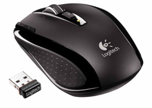

Mouse Logitech M305
Wireless Jet Black 1000dpi USB Preto
Disponibilidade: Em estoque
Marca: Logitech - www.logitech.com/pt-br
Modelo: 910-001752
Referência: 11517
De: R$ 120,00
Por: R$ 87,90
|
 |
|
O mouse wireless Logitech M305 te dá o conforto de um produto contornado, leve, rápido e preciso.
Plugue o receiver nano na sua porta USB e simplesmente esqueça dele;
É pequeno o suficiente para ficar plugado sempre, mesmo quando você colocar seu laptop dentro da bolsa!
O pequeno mouse cabe em sua própria bolsa de viagem para que você o leve a qualquer lugar.
Funciona tanto em laptops quanto em desktops.
|
|